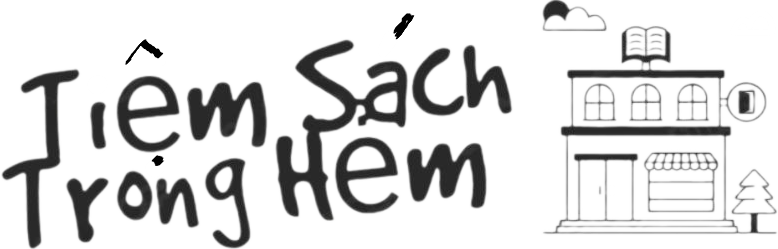

<div
  class="w-full bg-[#F9EFDB] z-[100] relative"
  [ngClass]="{ '!hidden': showNavigation === false }"
>
  <div class="w-full flex justify-center items-center flex-col">
    <nav class="w-[1200px] h-28 flex justify-between items-center">
      <div class="logo flex items-center justify-center cursor-pointer">
        <a routerLink="/" routerLinkActive="active">
          
        </a>
      </div>
      <div class="flex items-center justify-center">
        <div
          class="flex justify-between bg-gray-100 py-2 px-3 w-[600px] space-x-4 rounded-lg"
        >
          <input
            class="bg-gray-100 outline-none w-full"
            type="text"
            placeholder="What do you want to find?"
          />
          <div
            class="bg-[#EAE7DC] py-1 px-6 text-[#8E8D8A] font-semibold rounded-lg hover:shadow-lg transition duration-3000 cursor-pointer"
          >
            <svg
              xmlns="http://www.w3.org/2000/svg"
              class="h-6 w-6 opacity-30"
              fill="none"
              viewBox="0 0 24 24"
              stroke="currentColor"
            >
              <path
                stroke-linecap="round"
                stroke-linejoin="round"
                stroke-width="2"
                d="M21 21l-6-6m2-5a7 7 0 11-14 0 7 7 0 0114 0z"
              />
            </svg>
          </div>
        </div>
      </div>
      <div class="ctr">
        <ul class="flex items-center gap-x-6 w-full">
          <li
            class="flex flex-col items-center justify-center cursor-pointer relative transition-transform hover:scale-110 p-3"
            (mouseenter)="onModelCategories()"
            (mouseleave)="onMouseLeaveModelCategories()"
          >
            <a>
              <mat-icon
                class="material-symbols-outlined !h-7 !w-7 !overflow-visible text-3xl"
                >category</mat-icon
              >
            </a>
          </li>
          <li
            class="flex flex-col items-center justify-center cursor-pointer transition-transform hover:scale-110 p-3"
          >
            <mat-icon
              class="material-symbols-outlined !h-7 !w-7 !overflow-visible text-3xl"
              >notifications</mat-icon
            >
          </li>
          <li
            class="flex flex-col items-center justify-center cursor-pointer transition-transform hover:scale-110 p-3"
          >
            <mat-icon
              class="material-symbols-outlined !h-7 !w-7 !overflow-visible text-3xl"
              >shopping_cart</mat-icon
            >
          </li>
          <li
            class="relative flex flex-col items-center justify-center cursor-pointer transition-transform hover:scale-110 p-3 before:content-[''] before:inline-block before:absolute before:-bottom-8 before:right-2 before:bg-transparent before:w-20 before:h-10"
            (mouseenter)="onModelSignIn()"
            (mouseleave)="onMouseLeaveModelSignIn()"
          >
            <mat-icon
              class="material-symbols-outlined !h-7 !w-7 !overflow-visible text-3xl"
              >person</mat-icon
            >
          </li>
        </ul>
      </div>
    </nav>
  </div>
  <app-modal-menu
    class="fixed hidden top-0 right-0 left-0 bottom-0 z-99 hover:block"
    [ngClass]="{ '!block': isModelCategoriesVisible === false }"
  ></app-modal-menu>

  <app-modal-login-signup
    class="fixed hidden top-0 right-0 left-0 bottom-0 z-99 hover:block"
    [ngClass]="{ '!block': isModelSignInVisible === false }"
  ></app-modal-login-signup>
</div>
